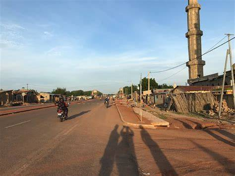

Kandi, fondée il y a plusieurs siècles, fut un carrefour commercial majeur entre le peuple Bariba et les marchands venus du nord. Son nom signifierait "le lieu où l'on se repose" en langue Baatonum, évoquant son rôle historique de halte pour les caravaniers traversant le Sahel.
Aujourd'hui chef-lieu du département de l'Alibori, la commune a su préserver son âme tout en se développant. Sous l'impulsion de Madame le Maire Zinatou ALAZI OSSEINI SAKA, Kandi s'engage dans une dynamique de modernité inclusive : réhabilitation des centres de santé, construction d'infrastructures scolaires, et amélioration du cadre de vie.
Saviez-vous ? Kandi abrite l'un des plus anciens marchés hebdomadaires du nord-Bénin, toujours aussi vivant chaque semaine, perpétuant des siècles d'échanges et de rencontres. La commune compte également 43 chefs de village et de quartier, garants des traditions et de la cohésion sociale.
